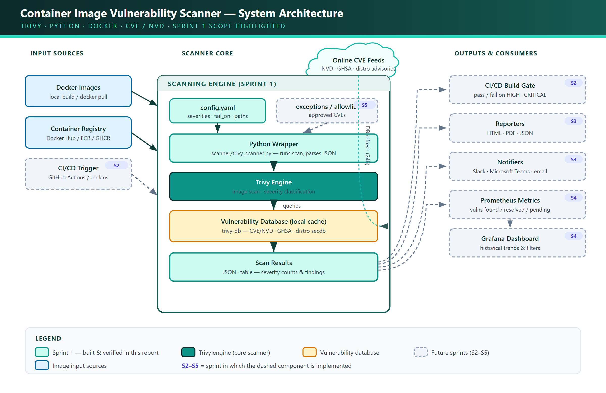

Problem
Container vulnerabilities can reach production when image checks are manual, inconsistent, or missing from delivery pipelines.
What was designed, implemented, tested, and demonstrated during Sprint 1 and Sprint 2.
Container vulnerabilities can reach production when image checks are manual, inconsistent, or missing from delivery pipelines.
A Trivy-based Python scanner that produces structured evidence and automatically blocks insecure images before deployment.
One policy engine is shared by local execution, GitHub Actions, and Jenkins—avoiding different rules on different platforms.
config.yamlnginx:latestpython:3.12-slimalpine:3.19node:18
Default threshold is HIGH. HIGH and CRITICAL findings block the pipeline; lower findings remain visible for review.
0 pass · 1 policy block · 2 invalid config · 3 operational failure.
Precedence: CLI → Environment → YAML → Default. Eight environment variables are validated.
16/16 tests passed without Docker or network dependency using synthetic Trivy fixtures.
| Path | Image | Result | Evidence |
|---|---|---|---|
| Green smoke test | hello-world:latest | PASSED | Tests + JSON artifact retained |
| Security gate test | alpine:3.19 | BLOCKED AS DESIGNED | 2 HIGH findings + artifact retained |
| Build | Image | Result | Evidence |
|---|---|---|---|
| #2 | hello-world:latest | SUCCESS | 16 tests, JSON archived |
| #3 | alpine:3.19 | POLICY BLOCKED | 2 HIGH findings, JSON archived |


Least-privilege GitHub permissions, no Docker socket for registry scans, validated configuration, and fail-closed operational behavior.
A scanner failure cannot appear as a clean result. Security evidence is preserved even when the policy deliberately fails a build.
Open-source Trivy and Python, public GitHub runners, cached vulnerability DB, and an existing academic Jenkins controller keep incremental cost at ₹0.
“In Sprint 1, we established the scanning foundation. We installed Trivy, integrated its CVE database, created a Python wrapper, and scanned four real container images. The wrapper converts scanner output into structured severity counts and JSON evidence.
In Sprint 2, we converted that scanner into an enforceable CI/CD gate. We added configurable severity thresholds and clear exit codes, then integrated the same policy engine into GitHub Actions and Jenkins. We demonstrated a green build using hello-world and an intentional blocked build using Alpine with two HIGH findings. Importantly, evidence was retained even when the build failed.
The result is a tested, zero-cost DevSecOps control that prevents vulnerable images from moving forward while keeping the policy consistent across CI platforms.”